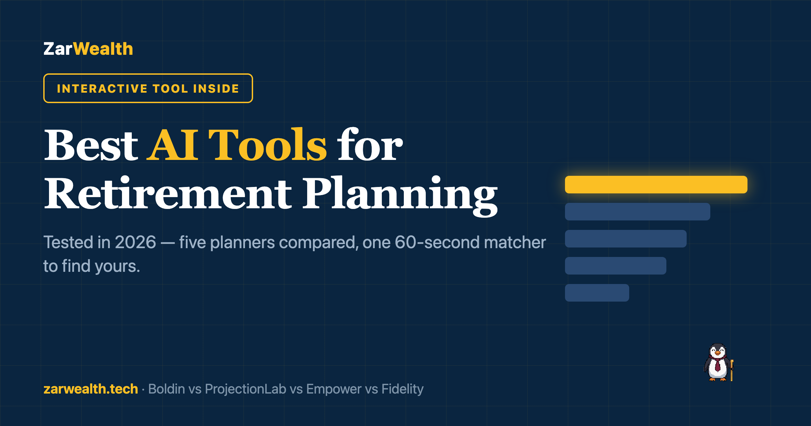

Best AI Tools for Retirement Planning in 2026
We compared Boldin, ProjectionLab, Empower and Fidelity on price, depth, and AI. See which planner fits your retirement — and which to skip.
Z Zar · 03 Jul 2026 — 6 min read

Here's something we did last month that felt slightly ridiculous: we asked four different AI-powered tools how much one of us needs to retire. Same numbers, same age, same savings. We got four different answers — and the gap between the lowest and the highest was more than $400,000.
Sit with that for a second. If you'd asked just one of them, you'd have walked away certain. And confidence is exactly what a 2025 MIT study warns about: AI-assisted planning made people roughly 40% more confident in their decisions without making outcomes any better — unless human judgment stayed in the loop.
So this isn't a list of shiny tools. It's the story of which ones earned our trust during a month of testing, which one we'd actually pay for, and the one we'd tell you to close the tab on. The quick comparison is below; the details — and the moments that decided them — follow.
🏆 Our Top Picks
| Pick | Best for | Rating | |
|---|---|---|---|
| Boldin | Full plan with an AI copilot | ★★★★★ | See pick → |
| ProjectionLab | FIRE-level modeling, no account linking | ★★★★½ | See pick → |
| Empower | Free all-in-one dashboard | ★★★★ | See pick → |
| Fidelity | Free check-up with humans nearby | ★★★★ | See pick → |
| AI chatbots | Questions and learning — not plans | ★★★ | See pick → |
Last reviewed: July 2026
Why AI planning tools got serious in 2026
For years, “AI” in personal finance meant a chatbot bolted onto a budgeting app. That changed. In February 2026, Boldin shipped an AI planner assistant that runs scenarios inside your actual plan — your income, your taxes, your accounts — instead of answering in generalities.
Robo-advisors quietly did the same for portfolios, and the modeling engines behind tools like ProjectionLab now handle Roth conversions and tax brackets that used to require a paid advisor. If you're new to automated investing, our guide to using a robo-advisor for retirement planning covers that side; this piece is about the planning brain, not the portfolio.
The result: for the first time, the question isn't whether an AI tool can help you plan retirement. It's which kind of help you need — and that's a more personal question than any feature list admits. We hit the same fork asking whether AI can beat quantitative investors: the tech is real, the fit is personal.
The five tools, compared
Our test scenario, for every tool: early 40s, $180,000 saved, a decent savings rate, hoping to step back from full-time work around 60. Prices checked July 2026. Here's what a month of poking produced.
1. Boldin: the full planner with an AI copilot
Boldin was the one that surprised us. Not because the AI assistant is clever — it's fine — but because of the moment it caught something we'd missed: our test plan had Social Security starting at 62, out of habit more than logic. The assistant flagged it, ran the math at 67, and the difference over a 25-year retirement penciled out north of $90,000. We didn't feel sold to. We felt seen.
PlannerPlus costs $144 a year after a 14-day free trial, and it's the tier that matters — the free version is a teaser. The Social Security optimizer is the best of any tool here, and it models Roth conversions without making you feel like you need a CPA in the room. Our take: if you only ever try one tool on this list, this is the one.
2. ProjectionLab: for people who want to see every year
ProjectionLab is what we'd hand a spreadsheet person. It never asks for your account logins — you type your numbers in, and everything runs in your browser. In an era where every finance app wants to connect to everything, that design choice reads like a statement.
The Premium tier is $129 a year, with a usable free tier and a $1,199 lifetime option. The year-by-year timeline is the best visualization of a financial life we've seen — this is the tool the FIRE crowd argues about in forums, for good reason. It explains less than Boldin, but it shows more.
3. Empower: the free dashboard that watches your money
Empower's Personal Dashboard is free, and it's the only tool here that watches your money instead of waiting for you to visit. Link your accounts and it tracks net worth, cash flow, and a retirement readiness score that updates as your balances move.
The moment that stung: its fee analyzer put a dollar figure on what our test portfolio's fund fees would quietly cost by age 60. We knew the concept. Seeing the number is different. The catch is well-known and honest — it's free because their advisors may call you. Say no thanks, keep the dashboard.
4. Fidelity Planning and Guidance Center: free, with a human nearby
Fidelity's Planning & Guidance Center is the sober one. A free plan, a Social Security claiming estimator, and a retirement score that answers the only question most people actually have: are we roughly on track? If you already know how much you need to retire, this tells you whether you're heading there.
It's high-level by design — you won't model a Roth conversion ladder here. But it's backed by an actual human on the phone, and after a month with AI tools, we came to respect that as a feature, not a fallback.
5. ChatGPT and friends: a great tutor, a poor planner
The wildcard. We asked general chatbots the same retirement questions, and the explanations were often the clearest of any tool here. But remember our four-answers story — most of that $400,000 gap came from the chatbots, each supremely confident in a different set of assumptions.
Morningstar ran a sharper version of this test, asking chatbots to build retirement portfolios, and reached the same place we did: useful for understanding, unreliable for executing. Use them as the tutor. Never as the plan.
Find your tool in 60 seconds
Every tool above is someone's right answer. The matcher below asks the four questions that decided it for us — budget, depth, privacy, and how much explanation you want — and tells you where we'd start. Argue with it; that's the point.
Tell us what happened.
You tapped four buttons. A tool won. Did the verdict match your instinct — or did it pick something you'd already dismissed?
Drop a quick reaction in the comments below — public, takes ten seconds. Or hit reply to the email — private, write as much as you want.
Where AI still falls short
The MIT finding is worth restating plainly: AI planning tools raise confidence faster than they raise competence. The gap between those two is where expensive mistakes live.
Concretely: chatbots still invent numbers with a straight face. Planning engines are only as honest as the assumptions you feed them. And none of these tools carry a fiduciary duty — the obligation to put your interests first still belongs to humans. We found the same pattern when we used AI to compare credit cards: brilliant at structuring a decision, dangerous at making it for you.
Pause here. Have you ever actually disagreed with a retirement calculator — or do you just accept the number? Be honest. If you've never argued with one, that's worth noticing before you pick any tool on this list.
Frequently Asked Questions
The three questions readers sent most while we were testing.
Can AI actually build a retirement plan?
It can build a projection, which is the skeleton of a plan. Tools like Boldin and ProjectionLab do that math well. What they can't do is know your health, your family, or how you'll behave in a 30% crash — the judgment layer is still yours, and the MIT research suggests keeping it that way.
Are AI retirement tools safe to connect to my accounts?
Empower and Fidelity use read-only aggregation — standard practice, generally safe, never zero-risk. If linking accounts makes you uneasy, ProjectionLab was built for you: manual entry only, nothing to breach. Match the tool to your comfort level, not the other way around.
What is the best free AI retirement tool in 2026?
Empower's dashboard if you want ongoing monitoring; Fidelity's Planning & Guidance Center if you want a one-time check-up; ProjectionLab's free tier if you want to model by hand. All three beat paying for a tool you'll open twice.
Tell us which tool you'd actually open this weekend — in the comments, or hit reply to the email if you'd rather keep it between us. We read every one.
These AI tools advise, but they don't invest for you — here's how an AI advisor compares to a robo-advisor and who each one wins for.
📘 Free Download
Get the 6-page FI Checklist PDF
A roadmap to financial independence — sent to your inbox the moment you subscribe. Plus weekly investing playbooks.
Send me the PDF →No spam. Unsubscribe anytime.

— The ZarWealth Team